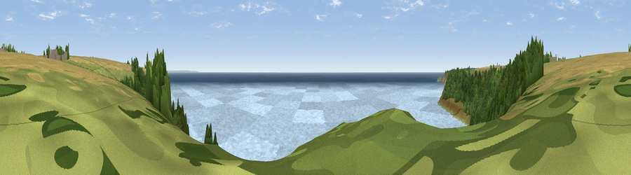

Viewpoint near Lamorna
#9077 in England · top 34% of its area beats it · near LamornaThe view, rendered

A 360° render of this exact spot computed from the terrain model, tree cover and land cover — summer colours, afternoon light, calibrated against photographs of famous viewpoints. Real trees, hedges and buildings will differ in detail.
The panorama
Grey silhouette: terrain skyline in each direction (720 bearings, Earth curvature and refraction included). Dashed green: skyline with trees (+15 m) and buildings (+8 m) as obstacles. Blue strip: how far the ground is visible on each bearing.
Where the view opens
Wedge length = distance to the farthest visible ground on that bearing (vegetation-aware). Rings at 10, 25 and 50 km.
What fills the view
78% water · 10% woodland · 6% grassland · 5% cropland
Angular shares of the visible panorama (visual magnitude), not map area. Landscape diversity 0.33 (0–1 Shannon).
Key numbers
More beautiful places nearby
The staircase of upgrades: each row has a higher view potential than everything closer. Driving times are estimates from straight-line distance, calibrated against real road routing — check an actual route before setting out.
| Place | Direction | Drive | Score |
|---|---|---|---|
| Viewpoint near Treen | W · 2 km | ~5 min | 65.9 |
| Viewpoint near Lamorna | ENE · 3 km | ~7 min | 70.2 |
| Viewpoint near Lamorna | NE · 3 km | ~8 min | 73.4 |
| Viewpoint near Paul | NNE · 6 km | ~12 min | 74.3 |
| Viewpoint near Bosavern | NW · 7 km | ~14 min | 82.4 |
| Viewpoint near Porthmeor | N · 13 km | ~24 min | 84.8 |
| Rosewall Hill | NNE · 17 km | ~30 min | 88.0 |
| Viewpoint near Combe Martin | NE · 171 km | ~192 min | 88.9 |
50.05265, -5.59055 · source: screening · position refined by local search. Computed location — check access rights before visiting.